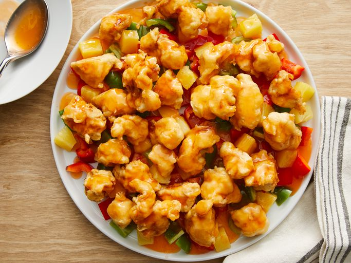

Sweet and Sour Chicken

Description
This sweet and sour chicken recipe makes crispy fried chicken pieces with pineapple and bell pepper served with a homemade tangy and sweet sauce.
Make restaurant-worthy sweet and sour chicken from scratch in the comfort of your own home with this top-rated recipe.
source
Ingredients
- 1 3/4 cups water, divided
- 1 (8 ounce) can pineapple, drained (juice reserved)
- 3/4 cups white sugar
- 1/2 cup white distilled vinegar
- 2 drops orange food coloring
- 1/4 cups cornstarch
- 2 1/4 cups self-rising flour
- 2 tablespoons vegetable oil
- 2 tablespoons cornstarch
- 1 large egg
- 1/2 teaspoon salt
- 1/4 teaspoon ground white pepper
- 1 1/2 cups water
- 8 skinless, boneless chicken breast halves - cut into 1 inch cubes
- 1 quart vegetable oil for frying
- 2 green bell pepper, cut into 1-inch pieces
Steps
-
Combine 1 1/2 cups water,
reserved pineapple juice, sugar, vinegar,
and orange food coloring in a medium saucepan.
Bring to a boil over medium head; set aside.
-
Mix 1/4 cup cornstarch and 1/4 cup water together
in a small bowl until smooth; pour in saucepan,
stirring continuously, until slightly thickened.
-
Place flour, 2 tablespoons cornstarch, egg, salt, and
white pepper in a large bowl; gradually whisk in 1 1/2
cups water to make a thick batter.
-
Add chicken pieces; stir until well coated.
-
Heat in a large, deep skillet or wok to 360 degrees F
(180 degrees C). Fry chicken pieces in preheated oil
until golden brown, about 10 minutes; remove and drain
on paper towels.
-
Layer green bell peppers, pineapple chunks, and cooked
chicken pieces on a platter; pour hot sweet and sour
sauce over top.
-
Serve hot and enjoy!
Links to other pages